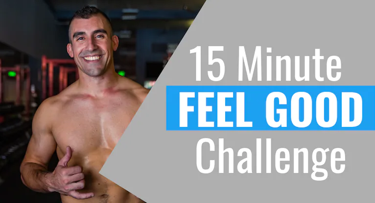

B260 · Strong and Open
Hi {first_name}!
Would you consider your body to be:⠀
Are you prioritizing one in particular? As the saying goes, “where attention goes, energy flows”⠀ Over the years, I’ve seen if our movement practice does not include both a focus on strength AND in some capacity openness, then we are likely to experience dysfunction and rigidity - the opposite of what it takes to achieve longevity. If you’d like to experience better results in your training, all while doing less, sign-ups are now open for a NEW 15 minute, 5 day FEEL GOOD Challenge.
 Our last challenge (centered around Morning Routines), went freaking awesome and we had over 400 people join! This challenge is brand new and is all about FEELING GOOD! I will be holding Live training sessions that you can do in 15 minutes to build vitality using bodyweight and kettlebells each day to improve how you feel immediately.
Each day beginning next Thursday October 22nd, I'll be offering 15-minute complete training sessions inclusive of breath-work, mobility training, kettlebell movement (only one bell needed), and cool-down stretching. Each day will progress on the routine from the prior day so you'll experience some fun and rad skill development in the process.
Click here to see all the information for the FEEL GOOD Challenge.
Also, I've been getting messages from a few people being curious if this is solely run on Facebook. If you would like to participate without using Facebook, that is totally cool, you'll just select the Elite option at checkout and that will give you access directly to the Zoom calls, as well as the post call recordings sent via email afterwards.
P.S. This week's new Youtube video is up! Check out this rad 7 exercise total body Bulgarian Bag workout you can do anywhere.
Click here to catch my new YouTube video.
|